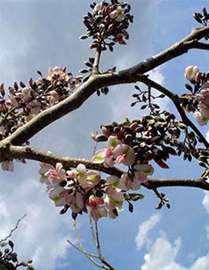

CHAKÁ

• Nombre común: También conocida como "árbol turista" por su corteza rojiza y pelada.
• Propiedades: Antiinflamatorias, se usa la corteza en infusiones para tratar infecciones de piel y fiebre.
• Ecología: Es un árbol resistente, importante para la regeneración del monte bajo.
JABÍN

• Usos medicinales: Sedante natural, se usa contra el insomnio y dolores musculares.
• Precauciones: Su uso excesivo puede ser tóxico.
• Nombre maya: Muy utilizado en medicina tradicional y también en carpintería por su madera dura.
PICH
• Nombre común: Guanacaste o oreja de elefante.
• Usos: Su sombra es apreciada en ´reas ganaderas; las vainas se usan como forraje.
• Importancia ecológica: Mejora el suelo, y su copa amplia da refugio a muchas especies.
MAKULIS
• Breve descripción de la especie: Árbol de hasta 15 mts. de altura, el tronco es recto y fisurado y la copa piramidal; las flores son de color rosa-morado, muy vistosas, dispuestas al final de las ramas; los frutos son cápsulas de 30 a 40 cms. de largo, ligeramente retorcidos.
• Descripción de su hábitat: Habita en las selvas medianas y altas subperennifolias, presentándose también en los petenes.
• Usos tradicionales de la especie: La madera es usada para las construcciones rurales. Es muy llamativo como ornamental.